ANIMLES SORPRENDENTES
MAMIFEROS
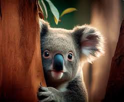
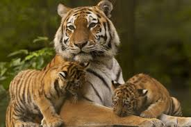
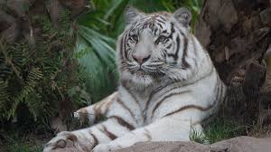
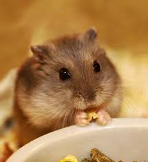
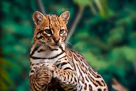
VISITA EL ZOO DE BARCELONA
Los mamiferos son animales vertebrados de sanger caliente, que se caracterizan por tener galndulas mamarias, con las que producen leche para alimentar a sus crias.Existen unas 5.486 especies de mamiferos y,segunla clasificacion de los mamiferos, se deviden en placentarios , los marsupialesy los monotremas.Todos los mamiferos descienden de un antepasado comun del Triásico, remontandose a los 200 millones de años .Existen una serie de caracteristicas de mamiferos por ejemplo:
- El hecho de que tiene glandulas mamamrias que generan leche
- Otro hecho distintivo es que todos los mamiferos tienen pelo, en alguna etapa de su vida
- Ademas , su estructura ósea comparten ciertas caracteristicas distintivas por ejemplo : Todos presentan 7 vertebras en la parte cervical de su columna vertebral y en la mayor parte de casos , a excepcion de los monotremas,su oido medio se compone de 3 huesos
AVES
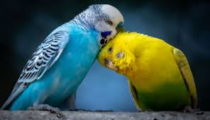
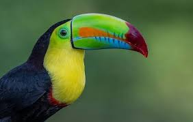
 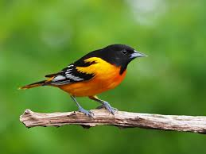
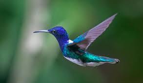
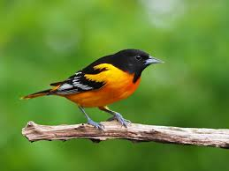
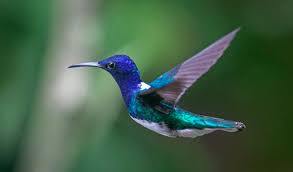
VISITA EL ZOO DE BARCELONA
Las aves son un tipo de animal vertebrado sque se reproducen a traves de huevos.Una de las caracteristicas mas comunes es que , independientemente de que vuelen o no , todas las aves tiene alas en sus extremidades delanteras. Estas es una de las principales y mas importantes ya que , aunque se pueden desplazar saltando o nadando, su principal medio de locomocion es el vuelo .De hecho todo su cuerpo esta diseñado para su funcion .Existen una serie de caracteristicas de ejemplos:
- Tienen simetria bilateral y un cuerpo aerodinamico adapatado para el vuelo
- Su cuerpo esta cubierto d eplumas , tiene tres tipos : plumas de vuelo , plumón , plumas de exhibición
- Suelen ser animales tetrápodos , las extremidades delanteras son alas y las traseras son patas cubiertas de escamas
- Tienen pico fuerte en vez de dientes
REPTILES
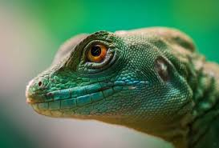
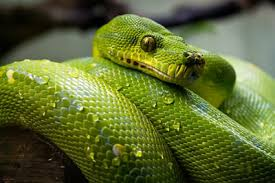
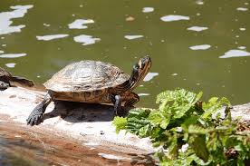
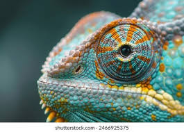
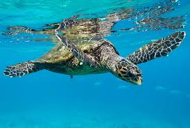
VISITA EL ZOO DE BARCELONA
Los reptiles son animales vertebrados que se desplazan raptanso mientras arrastran su vientre por el suelo . Este tipo de desplazamiento es debido a que , en su origen, habitaban medios acuaticos, pero tres años de evolucion se han adaptado por completo a la vida terrestre. Asi tambien hay reptiles que tienen patas erguidas y se desplazan andando siempre con el vientre muy cerca del suelo.Normalmente habitan en lugares con tierra y agua .Las principalescaracteristicas se destacan por:
- Existen 8.240 especies de reptiles aproximadamente
- Su cuerpo presenta una piel seca formada a base de escamas
- Su respiracion se da por los pulmones
- Son animales de sangre fria , es decir, la temperatura de su cuerpo depende de las condiciones climaticas
- La alimentacion de los reptiles es muy varaiada , pudiendo ser carnivoros, insectivoros, herbivoros ,u omnivoros